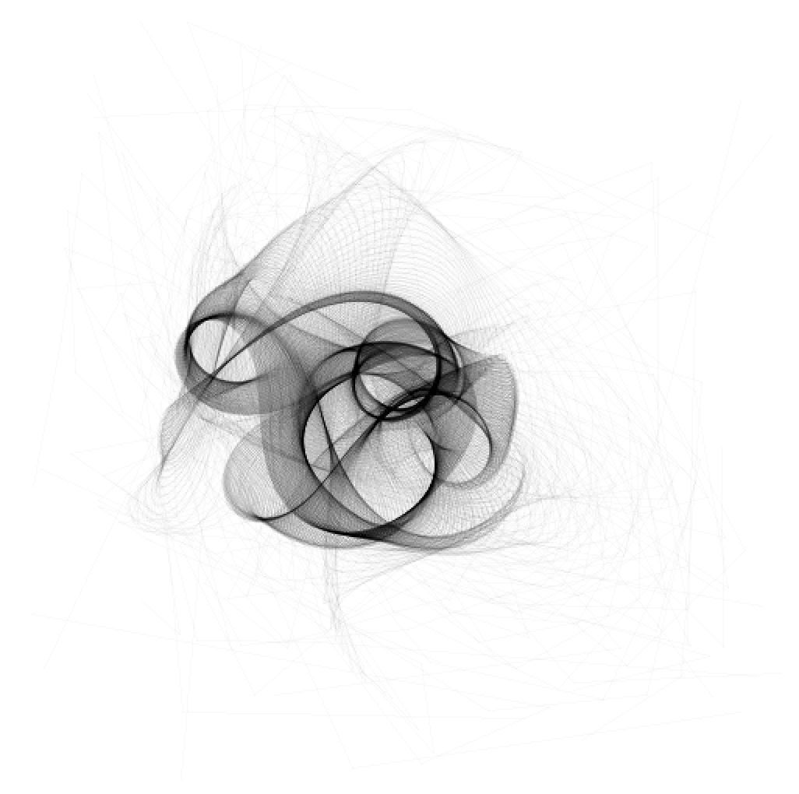

Untangle - Processing to Dart Port
A Processing to Dart experiment
For those of you who know me you will know that my usual tools of choice for creative coding is Processing or OpenFrameworks. But recently I have been really getting into Google’s Dart to the point where it has completely replaced my frontend development workflow. As I have gotten deeper with dart it has dawned on me that It might be possible to use it as an online creative coding platform.
Why would I do this?
Currently the dart VM is running more than twice as fast as the JS engine V8 that is included in chrome. Plus the dart can cross compile to JS that runs faster than hand written code. Couple that with the fact I like dart all I can see is win win. :)
Port
So the first goal I have set for myself to port the Processing application “Untangle” that creates this type of imagery:

My hope is that I will be able to generate something similar with Dart and WebGL